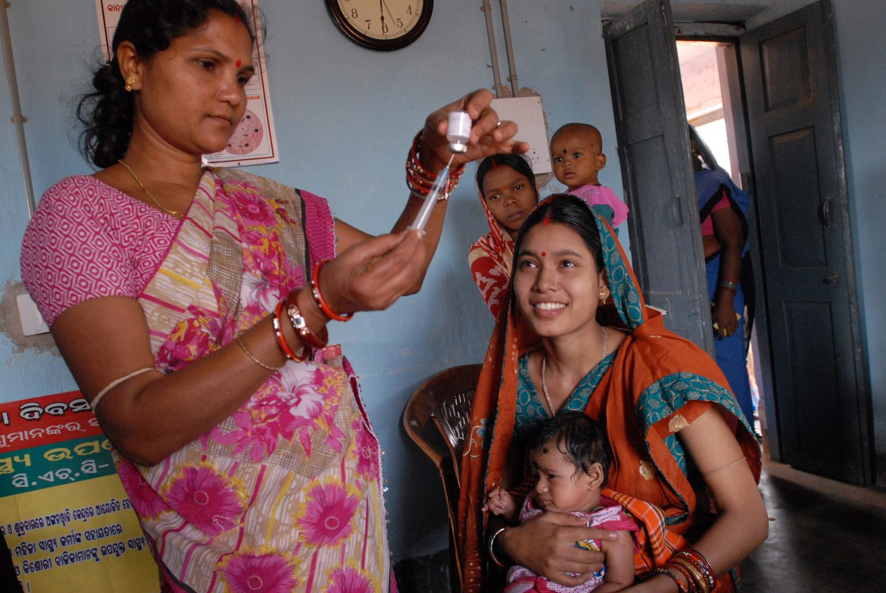
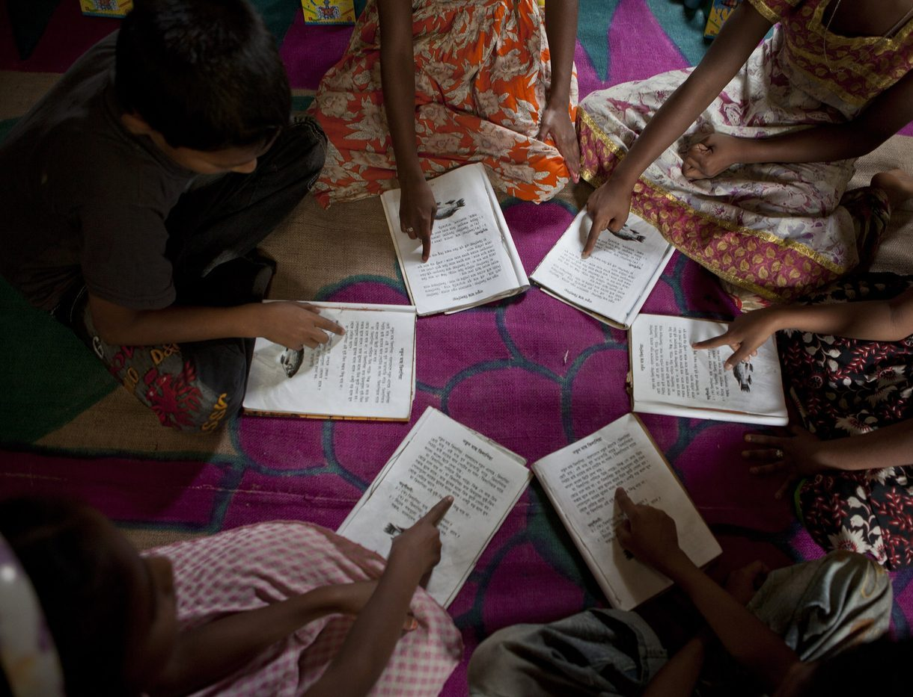
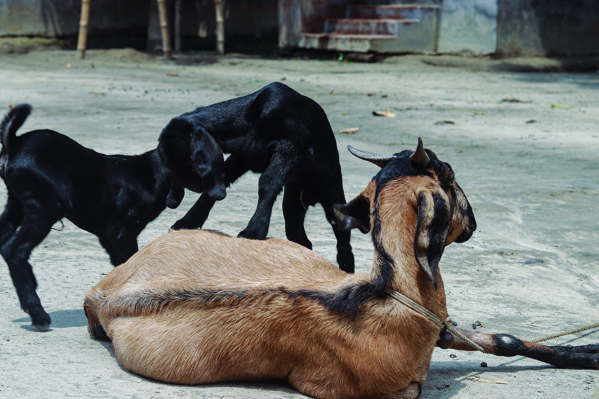

রাজস্থানের উদয়পুরের গ্রাম। শিশুদের টিকা বিনামূল্যে, তবু বেশির ভাগ মা পুরো কোর্স শেষ করাতেন না। গবেষকেরা একটা ছোট্ট কাজ করলেন: প্রতিবার টিকা দিতে এলে বাবা-মায়ের হাতে এক কেজি ডাল, আর পুরো কোর্স শেষ হলে এক সেট থালা। ডালের দাম ছিল এক দিনের মজুরিরও কম। ফল? যেসব গ্রামে শুধু নিয়মিত টিকা ক্যাম্প বসেছিল, সেখানে পুরো টিকা পেল ১৮% শিশু। ক্যাম্পের সাথে ডাল দেওয়া গ্রামে ৩৯%। আর যেখানে কিছুই করা হয়নি, সেখানে মাত্র ৬%।
এক ব্যাগ ডাল কীভাবে এত বড় পার্থক্য গড়ে? আর এটা যে সত্যিই ডালের জন্যই হলো, তা জানলাম কী করে? এই প্রশ্নের পেছনের পদ্ধতির জন্যই ২০১৯ সালে অর্থনীতির নোবেল পান তিনজন।

তিনজন মানুষ, একটা পদ্ধতি
জন্ম ১৯৬১, মুম্বাই। বড় হয়েছেন কলকাতায়, পড়েছেন প্রেসিডেন্সি কলেজে
ফ্রান্সে জন্ম। ৪৬ বছর বয়সে এই পুরস্কারের সবচেয়ে কমবয়সী বিজয়ী
হার্ভার্ডের অধ্যাপক। কেনিয়ার স্কুলে শুরু করেছিলেন এই ধরনের পরীক্ষা
ছবি: ব্যানার্জি, Sriya Sarkar, Wikimedia Commons, CC BY 4.0। ডুফলো ও ক্রেমার, US Embassy Sweden, ৯ ডিসেম্বর ২০১৯, Wikimedia Commons, CC BY 2.0
ব্যানার্জি আর ডুফলো দুজনেই এমআইটির অধ্যাপক, আর তাঁরা স্বামী-স্ত্রী। ডুফলো ছিলেন তখন পর্যন্ত অর্থনীতিতে নোবেল পাওয়া দ্বিতীয় নারী। নোবেল কমিটি বলেছিল, তাঁদের কাজ বাস্তবে গরিবি মোকাবিলার সক্ষমতা নাটকীয়ভাবে বাড়িয়েছে।
ওষুধের মতো করেই নীতির পরীক্ষা
নতুন ওষুধ বাজারে আসার আগে কী হয়? রোগীদের লটারি করে দুই দলে ভাগ করা হয়। এক দল পায় ওষুধ, আরেক দল পায় না। দুই দল যেহেতু লটারিতে ভাগ হয়েছে, তাই আর সব দিক থেকে তারা মোটামুটি একই রকম। শেষে দুই দলের পার্থক্যটুকুই ওষুধের আসল প্রভাব।
এই তিনজন একই কাজ করলেন গরিবি কমানোর কর্মসূচি নিয়ে। কোন গ্রাম বা স্কুল কর্মসূচি পাবে, তা ঠিক হলো লটারিতে। এর নাম "র্যান্ডমাইজড কন্ট্রোলড ট্রায়াল", সংক্ষেপে আরসিটি।
কেনিয়ার স্কুলে বই, আর কৃমির ওষুধ
নব্বইয়ের দশকে ক্রেমার কেনিয়ার গ্রামের স্কুলে পরীক্ষা শুরু করেন। প্রথম প্রশ্ন: স্কুলে বেশি পাঠ্যবই দিলে কি ফল ভালো হয়? উত্তর এল অবাক করা। গড়ে কোনো লাভ হয়নি। লাভ পেয়েছিল শুধু আগে থেকেই ভালো ছাত্রছাত্রীরা। কারণ বইগুলো ছিল ইংরেজিতে, অনেক শিশু সেটা পড়তেই পারত না।
এরপর কেনিয়ার ৭৫টি স্কুলে লটারি করে ঠিক হলো কোন স্কুল আগে কৃমির ওষুধ পাবে। যেসব স্কুলে ওষুধ আগে পৌঁছাল, সেখানে শিশুদের স্কুল কামাই কমে গেল প্রায় এক-চতুর্থাংশ। আরেকটা পরীক্ষায় দেখা গেল দামের জাদু: যেসব স্কুলে কৃমির ওষুধ বিনামূল্যে, সেখানে ৭৫% শিশু ওষুধ নিয়েছিল। যেখানে পরিবারপ্রতি এক ডলারেরও কম দাম ধরা হয়েছিল, সেখানে মাত্র ১৮%।
শিক্ষাটা পরিষ্কার: প্রতিরোধমূলক স্বাস্থ্যসেবায় শূন্য থেকে সামান্য দামও মানুষকে অনেক দূরে ঠেলে দেয়। উদয়পুরের ডালের গল্পও আসলে একই কথার উল্টো পিঠ।
যে যেখানে আছে, সেখান থেকে পড়ানো

ভারতের স্কুলে ব্যানার্জি আর ডুফলো দেখলেন, ক্লাসে পড়ানো হয় সিলেবাস ধরে, কিন্তু অনেক শিশু তখনো ঠিকমতো পড়তেই শেখেনি। তাই তারা পিছিয়েই থাকে। প্রথম নামের একটি সংস্থার সাথে মিলে তাঁরা পরীক্ষা করলেন: গ্রামেরই অল্পবয়সী মেয়েদের, যাঁদের নাম দেওয়া হলো "বালসখী" (হিন্দিতে "শিশুর সখী"), দুই সপ্তাহের প্রশিক্ষণ দিয়ে পিছিয়ে পড়া শিশুদের আলাদা করে দিনে দুই ঘণ্টা পড়াতে দেওয়া হলো। খরচ শিশুপ্রতি বছরে মাত্র সোয়া দুই ডলারের মতো, অথচ পড়া আর অঙ্কে স্পষ্ট উন্নতি হলো, বিশেষ করে অঙ্কে।
পদ্ধতিটার নাম এখন "টিচিং অ্যাট দ্য রাইট লেভেল": শিশু যে স্তরে আছে, সেখান থেকে পড়ানো। নোবেল কমিটির হিসাবে, তাঁদের গবেষণার সরাসরি ফল হিসেবে ভারতে ৫০ লাখের বেশি শিশু এমন প্রতিকারমূলক পাঠদানের সুবিধা পেয়েছে। জে-প্যালের হিসাবে এই পদ্ধতি এখন ভারত ও আফ্রিকায় ৮ কোটির বেশি শিশুর কাছে পৌঁছেছে।
কোনটা কাজ করে, তা অনুমানে নয়,
পরীক্ষা করে জানতে হয়।
ব্র্যাকের গরু-ছাগল, সারা বিশ্বের পরীক্ষা

এই গল্পে বাংলাদেশও আছে। ২০০২ সালে ব্র্যাক দেশের সবচেয়ে গরিব জেলাগুলোতে অতিদরিদ্র মানুষের জন্য একটা কর্মসূচি শুরু করে, যা এখন "আল্ট্রা-পুওর গ্র্যাজুয়েশন" নামে পরিচিত। সবচেয়ে গরিব পরিবারের নারীরা পান একটা গরু বা কয়েকটা ছাগল, কিছুদিন খাবারের খরচ, প্রশিক্ষণ আর নিয়মিত পরামর্শ।
লন্ডন স্কুল অব ইকোনমিকসের গবেষকেরা ১,৩০৯টি গ্রামে লটারি দিয়ে এর পরীক্ষা করেন। চার বছর পর অংশ নেওয়া নারীদের আয় শুরুর তুলনায় প্রায় ৩৭% বেড়েছিল, আর সাত বছর পরও সেই সুফল টিকে ছিল। আর ব্যানার্জি ও ডুফলো একই মডেল পরীক্ষা করেন ছয়টি দেশে: ইথিওপিয়া, ঘানা, হন্ডুরাস, ভারত, পাকিস্তান ও পেরু। প্রায় সব জায়গাতেই আয়, খাবার আর স্বাস্থ্যে উন্নতি হয়েছিল, আর কর্মসূচি শেষ হওয়ার পরও তা টিকে ছিল। পশ্চিমবঙ্গে একই ধরনের কর্মসূচির সুফল দশ বছর পরও দেখা গেছে।
সমালোচনাও আছে
সবাই এই পদ্ধতিতে খুশি নন। ২০১৫ সালের নোবেলজয়ী অ্যাঙ্গাস ডিটনের মতো অর্থনীতিবিদেরা বলেন, এক জায়গার পরীক্ষার ফল অন্য জায়গায় খাটবে, তার নিশ্চয়তা নেই। শুধু কী কাজ করে তা নয়, কেন কাজ করে, সেটাও বুঝতে হবে। আবার সব বড় প্রশ্ন, যেমন একটা দেশের বাণিজ্যনীতি বা মুদ্রানীতি, লটারি দিয়ে পরীক্ষা করা যায় না।
তবু এই তিনজনের বড় অবদান হলো একটা অভ্যাস তৈরি করা: বড় বড় তত্ত্বের বদলে ছোট ছোট প্রশ্ন, আর প্রতিটির উত্তর মাঠে গিয়ে যাচাই করা। ডুফলোর ভাষায়, অর্থনীতিবিদকে হতে হবে অনেকটা কলের মিস্ত্রির মতো, নীতির খুঁটিনাটিতে হাত লাগাতে হবে।
২০০৩ সালে ব্যানার্জি ও ডুফলো সেন্ধিল মুল্লাইনাথনের সাথে মিলে এমআইটিতে গড়ে তোলেন জে-প্যাল (J-PAL)। তাদের হিসাবে, এর সাথে যুক্ত গবেষকদের পরীক্ষা থেকে নেওয়া নীতি আর কর্মসূচি আজ ৮৫ কোটির বেশি মানুষের কাছে পৌঁছেছে।
এক কথায়, এবারের নোবেল গরিবি নিয়ে তর্কের বদলে প্রমাণ খোঁজার স্বীকৃতি।
← আগের পর্ব: গোলায় ধান ছিল, তবু মানুষ না খেয়ে মরল কেন?
আপনার এলাকায় কোন সরকারি বা এনজিও কর্মসূচি সত্যিই মানুষের কাজে লাগছে বলে মনে হয়? কমেন্টে লিখুন।
তথ্যসূত্র
- AP / PBS NewsHour: Nobel awarded to 3 economists for work to alleviate poverty (১৪ অক্টোবর ২০১৯)
- Lindau Nobel Laureate Meetings: 2019 Prize in Economic Sciences (রয়্যাল সুইডিশ একাডেমির ঘোষণার উদ্ধৃতি)
- J-PAL: Improving Immunization Rates Through Regular Camps and Incentives in India; Banerjee, Duflo, Glennerster ও Kothari, BMJ (২০১০)
- Glewwe, Kremer ও Moulin: Many Children Left Behind? Textbooks and Test Scores in Kenya
- J-PAL: Primary School Deworming in Kenya (Miguel ও Kremer, Econometrica, ২০০৪)
- J-PAL: The Illusion of Sustainability (Kremer ও Miguel, ২০০৭)
- J-PAL: Teaching at the Right Level; Banerjee, Cole, Duflo ও Linden, QJE (২০০৭)
- J-PAL: BRAC-এর অতিদরিদ্র কর্মসূচির মূল্যায়ন (Bandiera ও অন্যান্য, QJE, ২০১৭)
- MIT News: পশ্চিমবঙ্গে দশ বছর পরের ফল (Banerjee, Duflo ও Sharma, ২০২১)
- Deaton ও Cartwright: Understanding and Misunderstanding Randomized Controlled Trials
- Esther Duflo: The Economist as Plumber, American Economic Review (২০১৭)
- J-PAL: About us